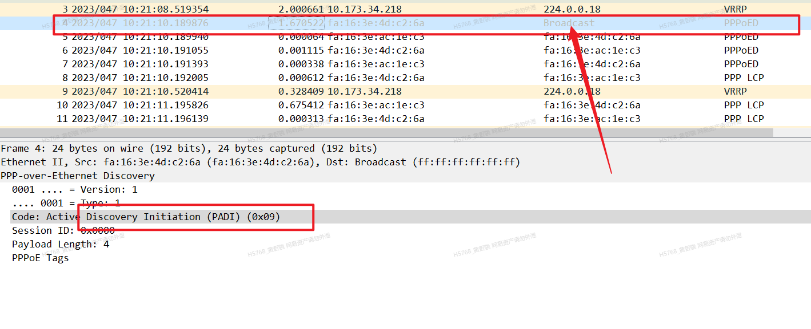
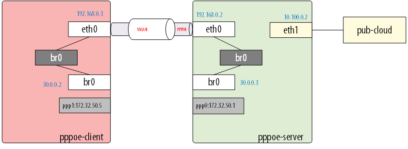

本来想在云网络2.0里面搭建一个pppoe client、server测试环境，搭建好之后发现client还是找不到server。
原理vpc环境不支持广播，因此在这一步就被卡住了

于是我们尝试使用pppoe over vxlan搭建了环境。
测试的拓扑图如下：

首先需要在两个虚拟机都安装ovs。
步骤一：分别在两个机器上创建网桥，并配置虚拟ip
1
2
3
4
5
6
7
|
VM1:
ovs-vsctl add-br br0
ifconfig br0 30.0.0.3/8 up
VM2:
ovs-vsctl add-br br0
ifconfig br0 30.0.0.2/8 up
|
步骤二：验证网桥之间的连通性，此时应该是不通的
步骤三：搭建隧道实现通信
1
|
ovs-vsctl add-port br0 vx1 -- set interface vx1 type=vxlan options:remote_ip=192.168.0.3
|
在VM2上创建vxlan
1
|
ovs-vsctl add-port br0 vx1 -- set interface vx1 type=vxlan options:remote_ip=192.168.0.2
|
步骤四：验证连通性，设置VxLAN后，两个虚拟机的同一网段数据层面是通信的。
步骤五： server端启动服务
1
|
pppoe-server -C isp -L 172.32.50.1 -p /etc/ppp/ipaddress_pool -I br0 -m 1412 -N 30
|
步骤六：client端使用 br0 作为网卡，进行拨号
测试：
1
2
3
4
5
6
7
8
9
10
11
12
13
14
15
16
17
18
19
20
21
22
23
24
25
26
27
28
29
30
31
32
33
|
ppp0: flags=4305 mtu 1492
inet 172.32.50.3 netmask 255.255.255.255 destination 172.32.50.1
ppp txqueuelen 3 (Point-to-Point Protocol)
RX packets 17 bytes 1230 (1.2 KiB)
RX errors 0 dropped 0 overruns 0 frame 0
TX packets 24 bytes 1818 (1.7 KiB)
TX errors 0 dropped 0 overruns 0 carrier 0 collisions 0
root@vpc-pppoe-1:~# ping 172.32.50.1
PING 172.32.50.1 (172.32.50.1) 56(84) bytes of data.
64 bytes from 172.32.50.1: icmp_seq=1 ttl=64 time=0.495 ms
64 bytes from 172.32.50.1: icmp_seq=2 ttl=64 time=0.597 ms
64 bytes from 172.32.50.1: icmp_seq=3 ttl=64 time=0.592 ms
^C
--- 172.32.50.1 ping statistics ---
3 packets transmitted, 3 received, 0% packet loss, time 2042ms
rtt min/avg/max/mdev = 0.495/0.561/0.597/0.050 ms
root@vpc-pppoe-1:~#
|